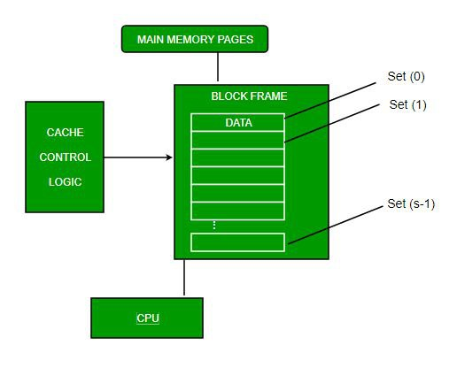

1. Direct Mapping
- Each block of main memory maps to only one cache line
- i.e. if a block is in cache, it must be in one specific place
- Least Significant w bits identify unique word within a block of
main memory
- Most Significant s bits specify one of the 2s blocks of main
memory
